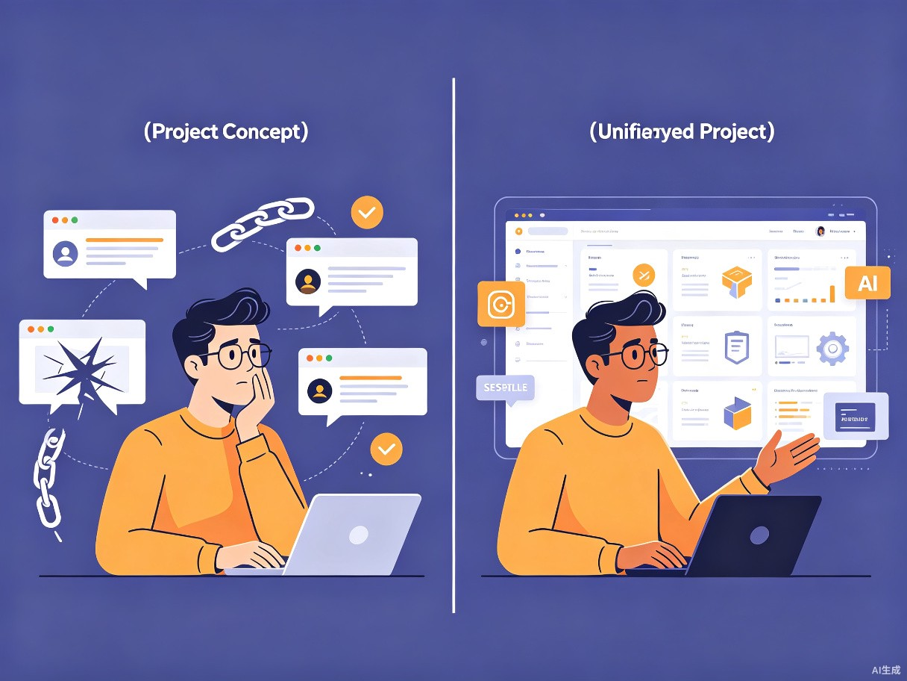
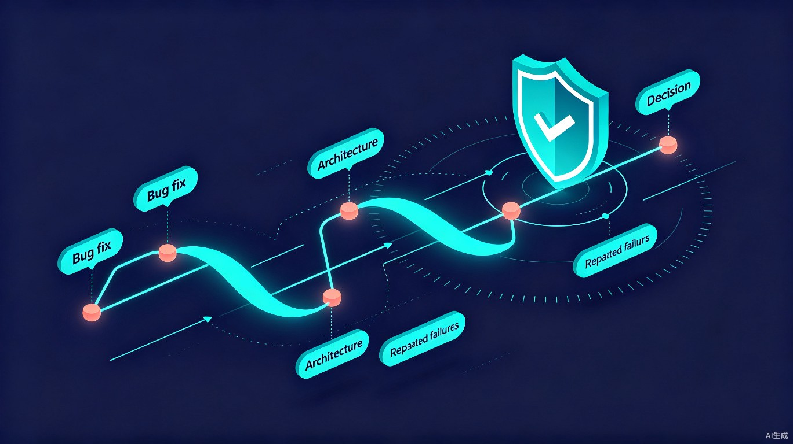

项目全生命周期 AI 上下文管理系统 — 让 AI 真正"记住"你的项目
创意名称：ProjectMind（项目全生命周期 AI 上下文管理系统）
想解决什么问题：在使用 AI 辅助编程时，每次打开新的聊天窗口，AI 就像得了"失忆症"——它不记得昨天讨论过的架构决策，不记得上周踩过的坑，更不记得哪些修复方案已经失败过。开发者不得不在不同 AI 工具之间反复解释同一套项目背景，浪费大量时间。
灵感来源：我自己在 Claude、Cursor、GitHub Copilot 之间切换开发时，每次都要重新介绍项目技术栈和架构思路，非常痛苦。后来看到 2026 年 6 月的一篇 arXiv 论文（ProjectMem）也指出了同样的行业通病——"AI coding agents remain largely stateless"，这让我意识到这不是个人困扰，而是一个值得系统性解决的通用问题。
产品形态：一个基于 Node.js / TypeScript 的开源 CLI 工具 + MCP 服务器，通过在项目目录中维护结构化的事件日志和 AI 可读的上下文摘要，让 AI 实现跨会话、跨平台的"项目记忆"。
核心用户群体：使用 AI 辅助编程的开发者，包括独立开发者、技术团队工程师、开源项目维护者，以及将 AI 引入教学场景的编程教育者。
使用场景：从项目初始化、架构设计、功能开发、Bug 修复、性能优化到复盘总结的全生命周期中，开发者通过简单的 CLI 命令（如 pmd log、pmd review）记录关键事件，AI 在每次对话前自动"复盘"项目上下文。
当前痛点：如果没有 ProjectMind，开发者在每次切换 AI 会话或更换 AI 平台时，都必须重新花费 10–30 分钟介绍项目背景；AI 可能在三天后重新提出一个三天前已经验证失败的修复方案；项目的架构决策、技术选型和踩坑经验散落在各个聊天窗口中，无法沉淀为可复用的知识资产。
效率提升：通过结构化的上下文管理和 AI 自动复盘机制，ProjectMind 可将 AI 对话的"预热时间"减少 50% 以上；同时通过"预操作判断门"（Judgment Gate）自动拦截与历史失败方案相似的操作，避免 AI 重复踩坑，让开发者把宝贵精力集中在真正的创新上。
社会价值：ProjectMind 降低了 AI 辅助编程的门槛，让个人开发者和小型团队也能享受"团队级"的知识沉淀能力；通过打包导出功能，项目上下文可以与代码一同交付，促进开源社区的知识共享与协作传承。它让 AI 从"一次性工具"进化为"长期伙伴"，推动人机协作进入新的阶段。
当我们使用 AI 辅助编程时，每次打开新的聊天窗口，AI 就像得了"失忆症"——它不记得昨天讨论过的架构决策，不记得上周踩过的坑，更不记得哪些修复方案已经失败过。这不仅浪费时间，更可能导致 AI 反复尝试相同的错误方案。
关闭聊天窗口后，AI 失去所有项目上下文，下次对话需要从头解释。
Claude、Cursor、Copilot 各自为政，项目知识无法在不同 AI 工具间流通。
AI 三天前提出的失败方案，三天后又被重新提出，浪费大量 Token 和时间。
项目越大，AI 需要读取的文件越多，每次对话的预热成本呈指数增长。

ProjectMind 通过结构化的上下文管理系统，为 AI 提供跨会话、跨平台的"项目记忆"。它像一个专业的"项目副驾驶"，记录项目的每一个关键节点，让 AI 在任何时候都能快速恢复对项目的完整理解。
系统的核心思想是事件溯源——像 Git 记录代码变更一样，ProjectMind 记录项目上下文变更。所有关键操作被记录为不可变的事件流，AI 可以通过复盘这些事件快速恢复对项目的理解。
在 AI 执行修复前，系统通过关键词匹配和 Dice 系数计算，自动检测当前方案是否与历史失败记录相似。如果相似度超过阈值，立即发出警告，在 AI 走弯路之前及时阻止。这是业界首个面向软件工程的确定性预操作拦截层。
每次 AI 工作前，先"复盘"——自动阅读结构化的上下文摘要，了解项目当前状态、待办事项、已知教训和脆弱区域。这类似于人类开发者阅读团队的 Weekly Report，但完全自动化、毫秒级响应。
在项目根目录生成 .pmdrules 文件，定义 AI 在每次对话前必须执行的操作清单。任何支持 MCP 或 CLI 的 AI 工具都可以遵循这些规则，实现"零培训"的跨平台切换。

ProjectMind 采用分层设计，从 AI 平台到底层存储，每一层都有明确的职责边界，确保系统的可扩展性和可维护性。
MCP stdio 协议
MCP stdio 协议
MCP stdio 协议
MCP stdio 协议
中央调度器
不可变事件日志
AI 摘要生成
预操作判断
JSON Lines 持久化
LRU 缓存加速
7 个 Markdown 模板
不可变事件流
AI 复盘摘要
项目配置
AI 操作规则
ProjectMind 提供极简的 CLI 体验，开发者可以在日常工作中无缝集成，无需改变现有工作流。
# 1. 初始化项目上下文
$ pmd init "电商平台" --description "Next.js + Supabase 全栈项目"
.pmd/ 目录已创建 | .pmdrules 规则文件已生成
# 2. 记录架构决策
$ pmd log architecture "采用微服务架构" --outcome success
事件已记录: ID: a1b2c3d4...
# 3. 记录 Bug 和修复过程（含失败尝试）
$ pmd log bug "iOS 登录页白屏" --location "src/pages/login.tsx" --outcome pending
$ pmd log bug_fix "尝试 position:fixed" --outcome failed
预操作警告: 当前操作与历史失败记录相似度 100%
$ pmd log bug_fix "使用 visualViewport API" --outcome success
# 4. AI 对话前自动复盘
$ pmd review
项目概述 | 当前状态 | 未解决问题 | 失败尝试 | 下一步建议
# 5. 打包导出，跨 AI 平台共享
$ pmd pack --format json --output context.json
上下文已导出，可在 Claude / Cursor / Copilot 间无缝迁移我们调研了当前主流的 AI 记忆方案，ProjectMind 在软件工程场景下具有显著优势。
| 特性 | ProjectMind | Cline Memory Bank | ai-memory | ProjectMem |
|---|---|---|---|---|
| 预操作判断门 | ✓ 确定性拦截 | × | × | ✓ 部分支持 |
| 事件溯源 | ✓ JSON Lines | × | × | ✓ 纯文本 |
| MCP 跨平台 | ✓ 5+ 平台 | ⚠ 仅 Cline | ✓ 通用 | ✓ MCP 支持 |
| AI 复盘规则文件 | ✓ .pmdrules | ⚠ .clinerules | × | × |
| 模板系统 | ✓ 7 个模板 | ✓ 有 | × | × |
| 打包导出 | ✓ JSON/Markdown | × | ✓ 有 | × |
| Git 友好 | ✓ 纯文本 | ✓ Markdown | × SQLite | ✓ 纯文本 |
同时维护多个项目，在不同 AI 工具间切换时不再重复解释项目背景，每次对话都能从正确的上下文开始。
新成员通过阅读 .pmd/ 目录快速了解项目架构和决策历史，AI 辅助 onboarding，大幅降低知识传递成本。
通过打包导出功能，将项目上下文与代码一同交付，贡献者可以立即获得完整的项目认知。
教师可以为课程项目预置 ProjectMind 上下文，学生与 AI 协作时始终处于正确的知识框架内。
ProjectMind 的终极愿景是Memory-as-Governance——记忆不仅是被动的上下文供给，更是主动的决策治理层。未来的迭代方向包括：
"让每一个 AI 对话都不再从零开始。"
一个命令，为你的项目装上"AI 大脑"。从第一天到最后一天，ProjectMind 始终陪伴。
npm install -g project-mind